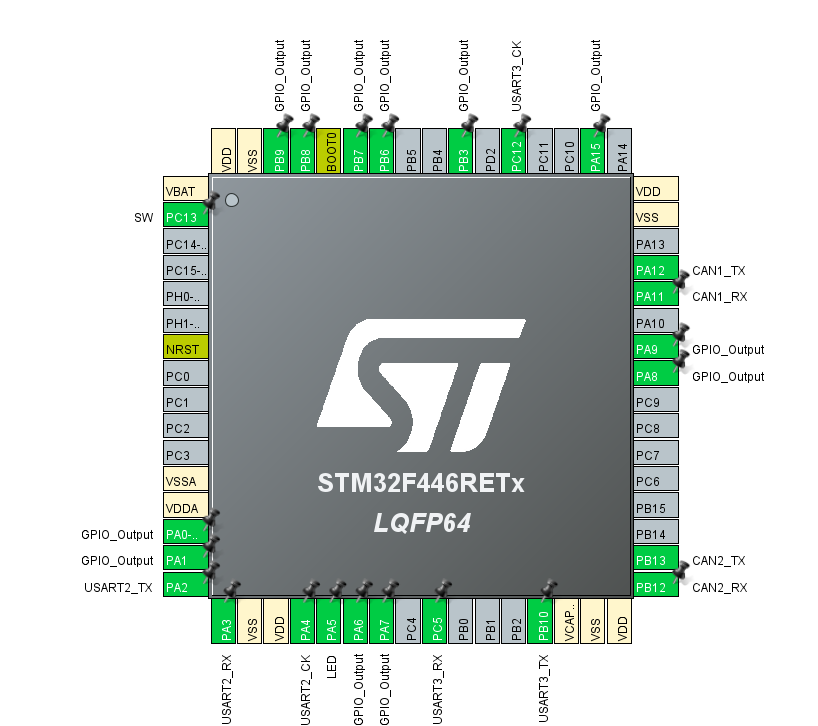

Altair_module_system
CAN バスで統一された、ロボット向けアクチュエータ制御モジュール群です。
ROS2 PC から USB-to-CAN アダプタを介し、モータ（MDD）・サーボ（Servo）・電磁弁（Solenoid Valve） の 3 種類のモジュールを制御します。
すべてのモジュールは STM32F446 をコントローラとし、CAN1 (1 Mbps) で通信を行います。
使い方
https://github.com/Altairu/Altair_module_system 上記URLより構築済みモジュールコードをダウンロードします．


ダウンロードが完了すると中身が以下画像のようなフォルダー構造になります．(2026/4/16現在)

回路に書き込む際は各フォルダー（MDDやServo）単体でVScodeで開くほうがビルド設定などが楽です．簡単なため初心者にはお勧めです．
目次
- Altair_module_system
- 使い方
- 目次
- システム全体像
- CAN ID マップ
- MDD (モータドライバードライバ)
- Servo (サーボモータ)
- Solenoid Valve (電磁弁)
- GUIツール一覧
システム全体像
┌──────────────┐ USB-to-CAN CAN Bus 回路 (赤色のやつ)
│ ROS2 PC │◄──────────────►═══════════════════════════
│ (GUI/制御) │ ║ ║ ║
└──────────────┘ ▼ ▼ ▼
┌────────┐ ┌───────┐ ┌──────────┐
│ MDD │ │ Servo │ │ Solenoid │
│ 4ch DC │ │ 6ch │ │ 12ch │
│ Motor │ │ PWM │ │ Valve │
└────────┘ └───────┘ └──────────┘
CAN ID マップ
| CAN ID | 方向 | モジュール | 内容 |
|---|---|---|---|
0x100 |
PC → MCU | Servo | 6ch 角度指令 (6B) |
0x200–0x203 |
PC → MCU | MDD | Motor1-4 パラメータ設定 (各 8B) |
0x210 |
PC → MCU | MDD | 4ch モード設定 (4B) |
0x220 |
PC → MCU | MDD | 4ch 目標値指令 (8B) |
0x230 |
MCU → PC | MDD | ステータス返信 (6B) |
0x300 |
PC → MCU | Solenoid Valve | 12ch 電磁弁 ON/OFF (2B) |
Note: 各 CAN ID はモジュール側のファームウェアにハードコードされていますが、GUIツール（統合GUI・Web Controller）では Base CAN ID を変更可能です。複数の同種モジュールを使用する場合は、ファームウェア側の CAN ID も合わせて変更してください。
MDD (モータドライバードライバ)
回路名: Altair_MDD_V3
CAN1 で ROS2 からパラメータ/目標値を受信し、STM32F446 でエンコーダフィードバック付き PID 制御を実行するモータドライバモジュールです。
概要
| 項目 | 内容 |
|---|---|
| MCUプロジェクト | MDD/ |
| 対象MCU | STM32F446 |
| モータ出力数 | 4ch |
| 制御モード | パラメータ設定モード / 制御実行モード |
| 使用CAN | CAN1 のみ |
| 状態LED | PA5 |
ピン割り当て
| 区分 | 信号 | ピン / タイマ |
|---|---|---|
| LED | STATUS LED | PA5 |
| Encoder | Encoder1 | PA0 / PA1 (TIM5) |
| Encoder | Encoder2 | PB6 / PB7 (TIM4) |
| Encoder | Encoder3 | PC6 / PC7 (TIM3) |
| Encoder | Encoder4 | PB3 / PA15 (TIM2) |
| Motor | Motor1 | PB14 (TIM12 CH1), PB15 (TIM12 CH2) |
| Motor | Motor2 | PA8 (TIM1 CH1), PA9 (TIM1 CH2) |
| Motor | Motor3 | PA6 (TIM13 CH1), PA7 (TIM14 CH1) |
| Motor | Motor4 | PB8 (TIM10 CH1), PB9 (TIM11 CH1) |
| Limit SW | SW1–SW4 | PC0, PC1, PC2, PC3 |
| Serial | USART2 | TX=PA2, RX=PA3 |
| Serial | USART3 | TX=PB10, RX=PC5 |
| CAN | CAN1 | TX=PA12, RX=PA11 |
| CAN | CAN2 | TX=PB13, RX=PB12 (本仕様では未使用) |
メインループ処理フロー
- 初期化 — HAL/CubeMX 初期化後、Altair_library_for_CubeIDE を用いて MotorDriver/Encoder/CAN1 を初期化し、パラメータ設定モードで起動。
- パラメータ設定モード — CAN ID
0x200–0x203の各パラメータと CAN ID0x210のモード設定を受信。4モータ分のパラメータ設定が完了するまで、制御用目標値は受信しません。 - 制御実行モードへの遷移 — 4モータ分パラメータ設定完了で
APP_MODE_CONTROLへ移行。移行後はパラメータ設定を受信しません。変更する場合はマイコンの再起動が必要です。 - 制御実行モード — 1ms 周期でエンコーダ差分から速度/角度/位置を更新し、モード（速度/角度/位置）に応じて PID 演算して PWM へ反映。目標値は CAN ID
0x220(8B) で受信。 - ステータス返信 — 10ms 周期で CAN ID
0x230を常時送信（パラメータ設定/制御実行の状態に関わらず）。 - LED 制御 — パラメータ設定完了後（制御実行モード）に ON。
CAN 通信仕様 (すべて CAN1, 1 Mbps)
A. パラメータ設定 (PC → MDD)
CAN ID: Motor1=0x200, Motor2=0x201, Motor3=0x202, Motor4=0x203
Payload: 8B (little-endian int16)
| バイト | 内容 |
|---|---|
| Byte0-1 | P ゲイン ×1000 |
| Byte2-3 | I ゲイン ×1000 |
| Byte4-5 | D ゲイン ×1000 |
| Byte6-7 | 車輪径/出力方向 |
Byte6-7 の解釈:
- 絶対値 = 車輪径 [mm]
- 符号: 正=通常方向, 負=反転方向
- 例: 0x0064 (100) → 車輪径 100mm, 通常方向 / 0xFF9C (-100) → 車輪径 100mm, 反転方向
CAN ID 0x210 (モード設定): Payload 4B — Byte0–3 が M1–M4 のモード値 (0=速度, 1=角度, 2=位置)
B. 目標値指令 (PC → MDD)
制御実行モードでのみ有効。
CAN ID 0x220: Payload 8B (little-endian int16)
| バイト | 内容 |
|---|---|
| Byte0-1 | M1 目標 ×10 |
| Byte2-3 | M2 目標 ×10 |
| Byte4-5 | M3 目標 ×10 |
| Byte6-7 | M4 目標 ×10 |
スケール: 速度モード=rps×10, 角度モード=deg×10, 位置モード=mm×10
C. ステータス返信 (MDD → PC)
CAN ID 0x230: Payload 6B（常時送信）
| バイト | 内容 |
|---|---|
| Byte0–3 | Limit SW1–SW4 |
| Byte4 | エラーコード |
| Byte5 | システム状態 (0=パラメータ設定, 1=制御実行) |
エラーコード
| 値 | 名称 | 内容 |
|---|---|---|
0x00 |
NORMAL | 正常 |
0x01 |
INIT_TIMEOUT | 初期化タイムアウト |
0x02 |
CAN_RX_TIMEOUT | 一定時間 CAN 受信なし |
0x04 |
CAN_TX_FAIL | フィードバック送信失敗 |
エラーコードはビットフラグで、同時に複数立つ場合があります。
Servo (サーボモータ)
回路名: ALTAIR_SERVO_MODULE_V6
ROS2 PC から USB-to-CAN を介して目標角度を送信し、STM32 が 6ch のサーボ PWM を生成するモジュールです。
概要
| 項目 | 内容 |
|---|---|
| MCUプロジェクト | Servo/ |
| 対象MCU | STM32F446 |
| サーボ出力数 | 6ch |
| 使用CAN | CAN1 (受信) |
| 搭載CANポート | 2 系統 |
| 状態LED | PA5 |
サーボ出力ピン
PIN 設定

| サーボ | ピン | タイマ |
|---|---|---|
| Servo1 | PA6 | TIM3 CH1 |
| Servo2 | PA7 | TIM3 CH2 |
| Servo3 | PA8 | TIM1 CH1 |
| Servo4 | PA9 | TIM1 CH2 |
| Servo5 | PB8 | TIM2 CH1 |
| Servo6 | PB9 | TIM2 CH2 |
PWM 制御仕様
| 項目 | 値 |
|---|---|
| 制御周期 | 20ms (50Hz) |
| パルス幅範囲 | 0.5ms ～ 2.5ms |
| 角度入力範囲 | 0 ～ 180 度 |
| 角度-パルス幅変換 | pulse_us = 500 + (2000 × angle_deg / 180) |
CAN 受信仕様 (PC → MCU)
| 項目 | 値 |
|---|---|
| 使用CAN | CAN1 |
| CAN ID | 0x100 (標準ID) |
| DLC | 6 |
Payload (6B): Byte0–Byte5 = Servo1–Servo6 角度 [0..180]
注記: - Byte 値が 180 を超える場合は MCU 側で 180 にクリップ - 受信ノイズ対策として各軸にデッドバンド 2deg を適用 - 同一候補値が 3 回連続したときのみ目標値へ反映
通信時の動作
| 条件 | 動作 |
|---|---|
| CAN フレーム受信時 | LED(PA5) を ON |
| 200ms 以上無受信時 | LED(PA5) を OFF |
| 通信途絶時 | 最後の反映済み目標角度を保持して出力継続 |
| 起動直後 | 全軸 90deg で PWM 開始 |
Solenoid Valve (電磁弁)
回路名: ALTAIR_SOLENOID_VALVE_MODULE
ROS2 PC から USB-to-CAN を介して ON/OFF 指令を送信し、STM32 が最大 12 個の電磁弁（ソレノイドバルブ）を駆動するモジュールです。
概要

| 項目 | 内容 |
|---|---|
| MCUプロジェクト | solenoid_valve/ |
| 対象MCU | STM32F446 |
| 出力数 | 12ch (GPIO) |
| 使用CAN | CAN1 (受信) |
| CAN ID | 0x300 (標準ID) |
| 状態LED | PA5 |
出力ピン割り当て
| 電磁弁 | ピン |
|---|---|
| Valve 1 | PA0 |
| Valve 2 | PA1 |
| Valve 3 | PA6 |
| Valve 4 | PA7 |
| Valve 5 | PA8 |
| Valve 6 | PA9 |
| Valve 7 | PA15 |
| Valve 8 | PB3 |
| Valve 9 | PB6 |
| Valve 10 | PB7 |
| Valve 11 | PB8 |
| Valve 12 | PB9 |
CAN 受信仕様 (PC → MCU)
| 項目 | 値 |
|---|---|
| 使用CAN | CAN1 |
| CAN ID | 0x300 (標準ID) |
| DLC | 2 以上 |
Payload (2B): 12 個の電磁弁の ON/OFF をビットで割り当て
- Byte0 (Valve 1–8):
- bit0: Valve 1 (PA0) ～ bit7: Valve 8 (PB3)
- Byte1 (Valve 9–12):
- bit0: Valve 9 (PB6) ～ bit3: Valve 12 (PB9)
- bit4-7: 未使用
通信時の動作
| 条件 | 動作 |
|---|---|
0x300 受信時 |
ビット状態に従い GPIO 出力を設定、LED ON |
| 200ms 以上無受信時 | LED OFF（ピン出力状態は保持） |
GUIツール一覧
Altair Module System では、用途に応じて 3 種類 の制御ツールを用意しています。
| ツール | 環境 | 対応モジュール | 特徴 |
|---|---|---|---|
| モジュール個別 GUI | Python (Ubuntu/Windows) | 各 1 種類 | シンプル。単一モジュールのテストに最適 |
| 統合 GUI (Unified/Advanced) | Python (Ubuntu/Windows) | MDD + Servo + Solenoid | タブ切替で全モジュール一括操作 |
| Altair Web Controller | ブラウザ (Chrome/Edge) | MDD + Servo + Solenoid | インストール不要。動的モジュール追加、Blockly 自動化、ゲームコントローラー対応 |
1. モジュール個別 GUI (Python)
各モジュールのディレクトリに、UbuntuとWindows用のGUIスクリプトが用意されています。単一モジュールの動作テストに最適です。
| モジュール | Ubuntu | Windows | ディレクトリ |
|---|---|---|---|
| MDD | mdd_gui_ubuntu.py |
mdd_gui_win.py |
MDD/ |
| Servo | servo_gui_ubuntu.py |
servo_gui_win.py |
Servo/ |
| Solenoid Valve | solenoid_valve_gui_ubuntu.py |
solenoid_valve_gui_win.py |
solenoid_valve/ |
依存環境の準備
Ubuntu:
sudo apt install python3-tk
pip install python-can
Windows:
pip install python-can pyserial
使用する CAN インターフェースに応じたドライバ（PCAN ドライバ等）をあらかじめインストールしてください。
slcan（COM ポート経由の CAN アダプタ）を使用する場合はpyserialが必須です。
使い方
# Ubuntu の例 (MDD)
cd MDD
python3 mdd_gui_ubuntu.py
# Windows の例 (Solenoid Valve)
cd solenoid_valve
python solenoid_valve_gui_win.py
- 接続: CAN インターフェース・チャネル・ビットレートを指定して接続
- 操作: 各モジュール固有の制御 UI で操作
- MDD: PID パラメータ設定 → 制御実行モード → スライダーで目標値送信
- Servo: スライダーで 0–180 度の角度を設定、単発/周期送信
- Solenoid Valve: チェックボックスで 12ch の ON/OFF を設定、単発/周期送信
2. 統合 GUI (Altair Unified GUI — Python)
MDD・Servo・Solenoid Valve の 3 モジュールを 1 つの画面でタブ切り替え して操作できる統合ツールです。1 回の CAN 接続操作で、すべてのモジュールの送信テストを一括して行えます。
| スクリプト | 対応OS | デフォルト設定 |
|---|---|---|
Altair_module_system_Ubuntu.py |
Ubuntu | socketcan / can0 |
Altair_module_system_win.py |
Windows | slcan / COM3 |
Altair_module_system_advanced_Ubuntu.py |
Ubuntu (拡張版) | socketcan / can0 |
特徴
- タブ切り替え: MDD / Servo / Solenoid Valve の各画面をシームレスに切り替え
- 独立周期送信: MDD・Servo は 10ms 周期、Solenoid Valve は 100ms 周期（それぞれ独立して ON/OFF 可能）
- 共有ログ: 全モジュールの送受信ログを画面下部で一元管理
- 拡張版 (Advanced): 動的モジュール追加、可変 CAN ID、マクロ・トリガー制御に対応
使い方
Ubuntu:
pip install python-can
python3 Altair_module_system_Ubuntu.py
Windows:
pip install python-can pyserial
python Altair_module_system_win.py
接続後、Interface / Channel / Bitrate を指定して「接続」ボタンを押してください。
3. Altair Web Controller (ブラウザ)
別リポジトリ: Altair_module_system_control
MDD・Servo・Solenoid Valve を ブラウザからインストール不要で直接制御 できるウェブアプリケーションです。
Python やドライバのインストールが不要で、URL を開くだけで動作します。
アクセス URL
🌐 https://altairu.github.io/Altair_module_system_control/
対応環境
| 項目 | 要件 |
|---|---|
| ブラウザ | パソコン版 Google Chrome または Microsoft Edge |
| CAN インターフェース | slcan プロトコル（USB を COM ポートとして認識するもの） |
| 通信方式 | Web Serial API（ブラウザ標準機能） |
注意: Firefox / Safari / スマートフォンブラウザでは Web Serial API が利用できないため動作しません。
PCAN や SocketCAN 等の専用ドライバが必要なデバイスには対応していません。
主な機能
| 機能 | 説明 |
|---|---|
| ダッシュボード | MDD・Servo・Solenoid のモジュールカードを動的に追加し、スライダーやチェックボックスでリアルタイム制御 |
| 動的モジュール構成 | モジュールを無制限に追加可能。Base CAN ID を自由に設定でき、同種モジュール複数台もサポート |
| Automation (Blockly) | Google Blockly を用いた Scratch ライクなマクロ・トリガー作成機能。MDD のリミットスイッチ等を条件に、他のモジュールを自動制御 |
| Game Controller | USB / Bluetooth 接続のゲームコントローラー入力をマッピングし、ボタンやスティックでモジュールを操作 |
| システムログ | 送受信ログをリアルタイムで表示・確認 |
| 設定の保存 | ブラウザの LocalStorage に設定を自動保存。次回アクセス時に復元 |
UI の特徴
- Glassmorphism + ダークテーマ を採用したモダンなデザイン
- サイドバーナビゲーション: Dashboard / Automation / Controller / Logs をワンクリックで切り替え
- レスポンシブレイアウト: モジュールカードが画面サイズに応じてグリッド配置
使い方
- 上記の URL に Chrome または Edge でアクセス
- サイドバーの Connection セクションで Bitrate を選択し、「Connect USB」ボタンをクリック
- OS のダイアログで slcan デバイス（COM ポート）を選択して接続
- サイドバーの Modules セクションで「Add Module」をクリックし、モジュールタイプ・名前・Base CAN ID を指定して追加
- Dashboard 上に表示されるモジュールカードで制御操作を行う
Note
著者:Shion Noguchi